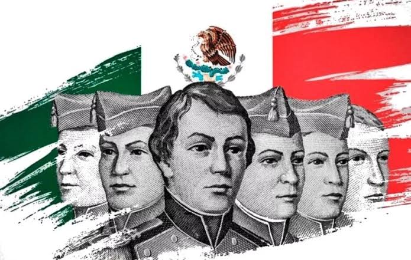
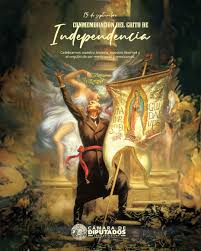
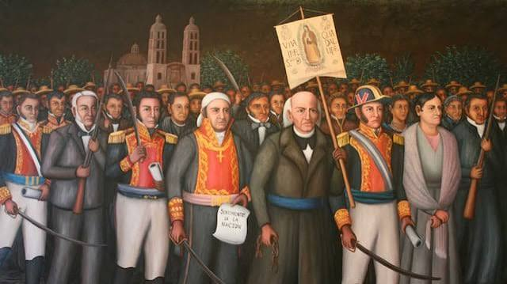
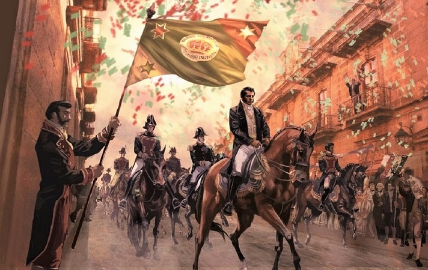
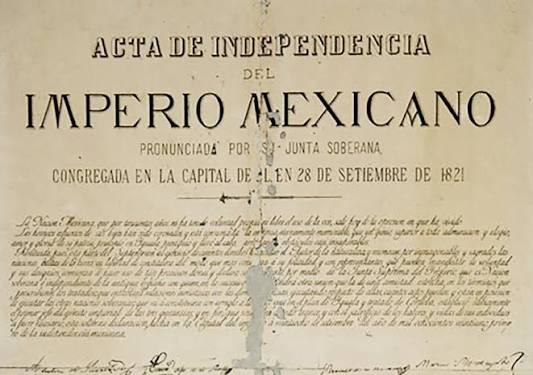
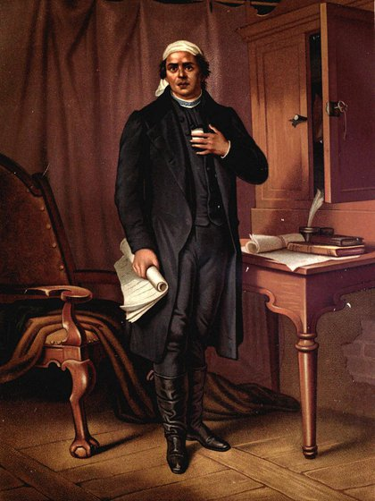

Día de los Niños Héroes
Conmemoramos la gesta heroica de los Niños Héroes, jóvenes cadetes que defendieron el Castillo de Chapultepec en 1847 durante la invasión estadounidense.

La Noche del Grito
La tradicional Noche del Grito, en la que el pueblo mexicano celebra con música, comida típica y fuegos artificiales el inicio de la lucha por la independencia. Ese mismo día, pero en 1854, se interpretó por primera vez el Himno Nacional Mexicano.

Día de la Independencia de México
Se recuerda el levantamiento encabezado por Miguel Hidalgo en 1810. Es una de las celebraciones patrias más importantes del país.

Consumación de la Independencia
Consumación de la Independencia de México en 1821, con la entrada triunfal del Ejército Trigarante a la Ciudad de México.

Firma del Acta de Independencia
Un día después de la entrada triunfal del Ejército Trigarante, se elaboró y firmó el Acta de Independencia del Imperio Mexicano por los miembros de la Soberana Junta Provisional Gubernativa, órgano de gobierno provisional seleccionado por Agustín de Iturbide.

Natalicio de José María Morelos y Pavón
Se conmemora el natalicio de uno de los grandes líderes del movimiento insurgente, José María Morelos y Pavón.